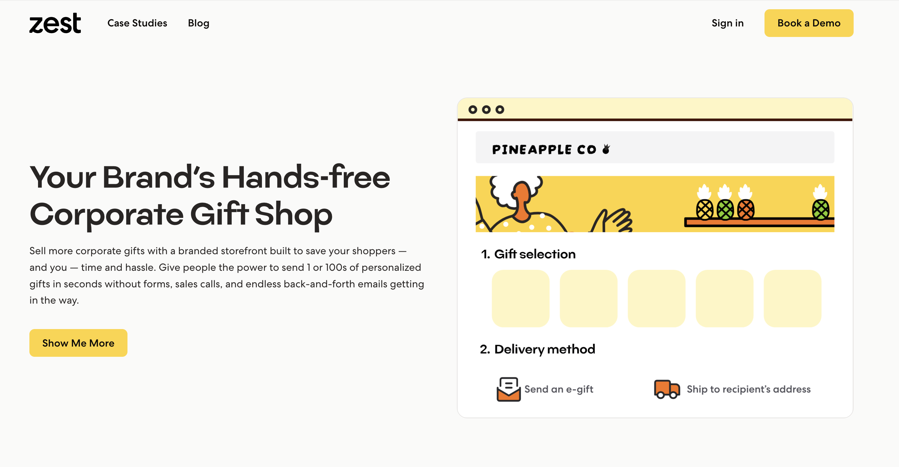
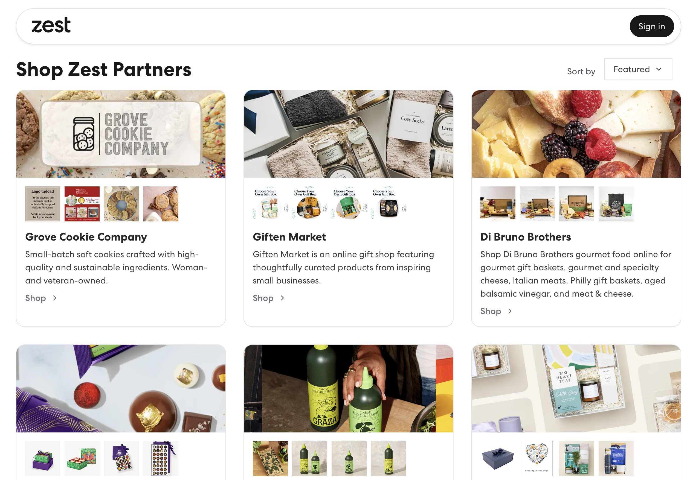
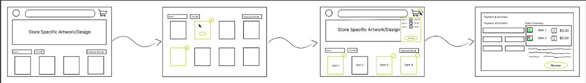
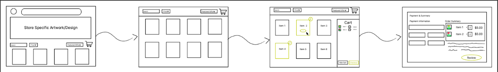
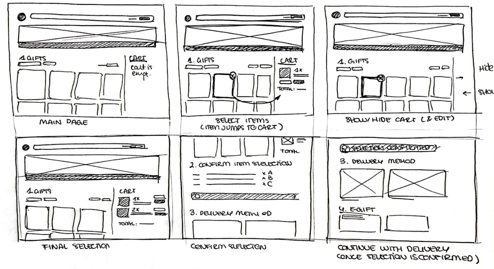
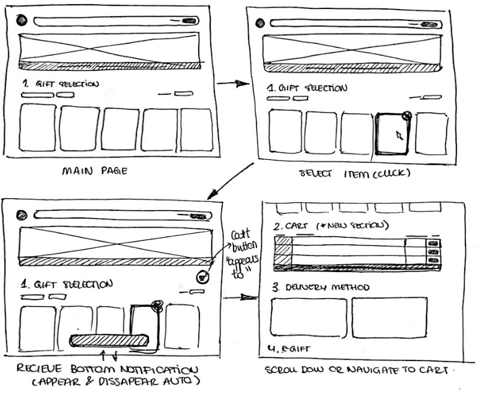
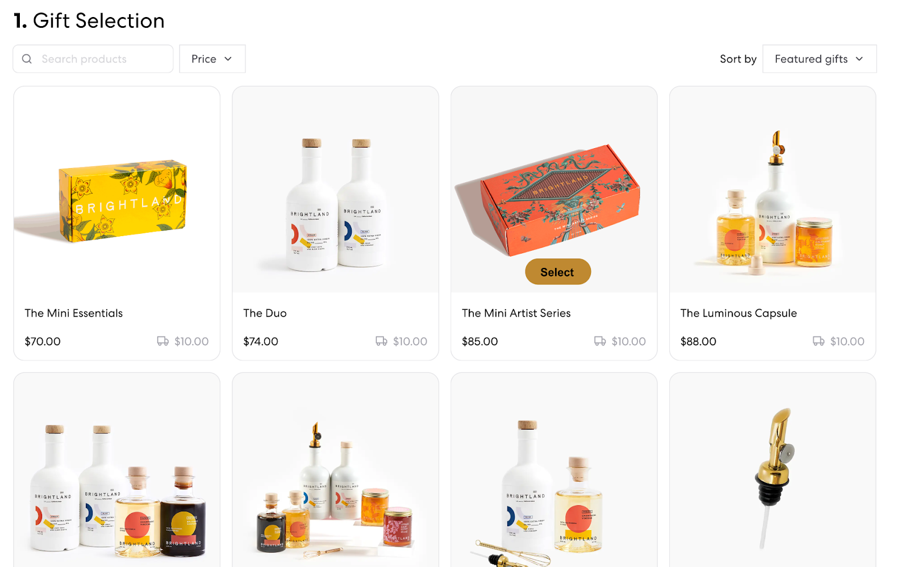
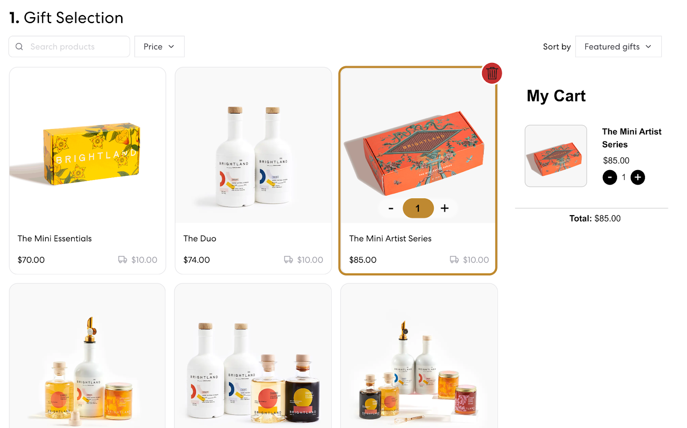

Zest Shopping Cart - Enhancing Corporate Gifting
Zest is a corporate gifting platform that connects brands to corporate gifters. Zest approached our team with a feature request to add a shopping cart to their existing UI consistent with their style and practices.
This project involved an iterative design process, where we worked closely with the Zest team to develop a shopping cart feature tailored for corporate gifting, enhancing the online shopping experience for Zest's users.
 Team and Role
I worked alongside Dalton Simonson, Patricia Montalvo Hernandez, and Vishak Vinod. My role was primarily focused on UX design and front-end development, ensuring the shopping cart's seamless integration with existing UI elements.
Problem
The challenge was to create a shopping cart that could handle multiple items and quantities per recipient without confusing the user, especially in a large catalog scenario. The existing UI shows no shopping cart and inability to add multiple items.

Solution Overview
We introduced a side-cart feature, which allows users to manage their selections efficiently while continuing to browse, significantly enhancing user experience. We also added the ability for users to select multiple items of each type.
Design Process
The process began with sketching early user flows to address the identified pain points. This was followed by developing wireframes and collaborating closely with subject matter experts to refine our designs.
Early Prototypes
Early prototypes were developed to explore different ways of handling multiple items and quantities. We tested these with users to understand their preferences and pain points.
   Wireframes v1
We then created our first wireframe iteration and sent it to the client for feedback
 Client Feedback v1
Our first client feedback had 2 primary critiques:
Wireframes v2
We revised our wireframe based on this critique.
Final Feedback
During our meeting with the company, we presented an alternative method for the user shopping experience, which was well received. We also confirmed that our current approach is effective, especially since we considered the company's preference for minimal changes. We received the following critical feedback:
Desktop Critique
- It is unclear how the quantity per recipient changes when items are added or removed using the icon.
- The color of the Remove button is not visible enough.
- Consider making the cart accessible across all sections of the site.
- The Brightland logo appears twice in the cart.
Mobile Critique
- The title in the Review Items Section is confusing. It's unclear whether it refers to each recipient or to all items collectively.
Final Feedback Implementation
After reviewing the feedback from the meeting, we decided to redesign the desktop version of the shopping cart, focusing mostly on the opened cart and the item selection. The main modifications implemented were the following:
- In order to avoid showing the logo in different parts of the screen, we decided to fix the top section of the interface. In this manner, regardless of the scroll position, the logo of the store is always visible on the top left corner. Following this decision, we deleted the logo from the shopping cart.
- Within the item selection, again, we fixed the heading of the selection. This heading includes the button to access the cart, which we believe should be accessible at all times while browsing items.
- Within the item selection, we added different states to the cart button, to show its status (inactive/empty/with items).
- When the cart is open, we leveled its container to the filter and sorting buttons, to simplify the layout and make the navigation more user friendly.
- Additionally, we fixed and simplified the content of the open cart. Our main goal was to make it more clear that the item selection is represented per recipient. With this goal, we also modified the title from: "Your shopping cart", to: "Your item selection".
- Furthermore, we added an option to delete items directly from the cart rather than just modify its quantity, and we added an additional feature: a calculator (to estimate the cart total, simulating the number of recipients).
- Moreover, we removed the checkout button from the opened cart to reduce confusion and we changed the hide option to a simple X in the upper left corner of the cart.
- Within the product cards, we rearranged the add, decrease, and remove buttons to make it easier to understand and navigate. Additionally, we returned to our original version of the delete button as it proved to be more intuitive. In order to decide the final aesthetic of the product cards, different versions were drafted and rated by 12 users, which allowed us to arrive at our final iteration.